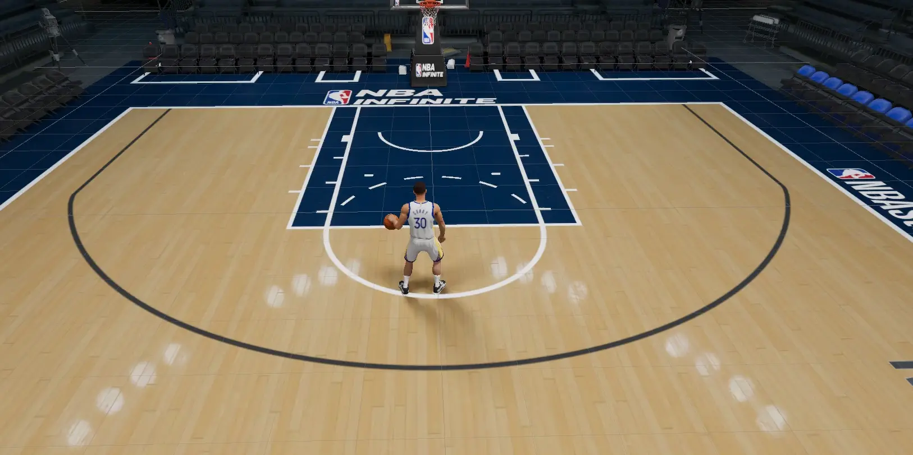
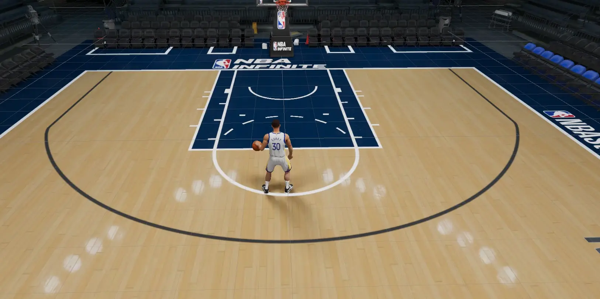
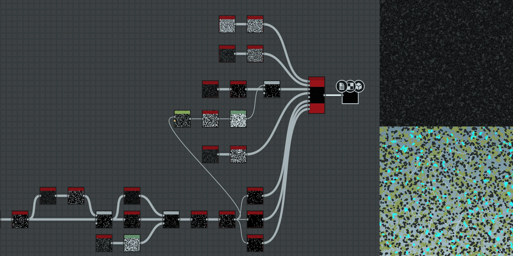
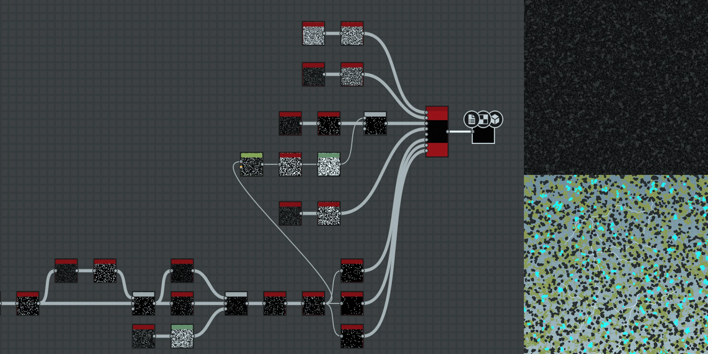

Rendering
Cached Decals
-
User customizable car decals.

Shadowing
-
Includes techniques such as optimized blob shadow and capsule shadow that eliminate the need for shadow maps, enhancing performance and enabling special effects.
 
Crowd Rendering
-
Animation data is baked into a texture array, allowing skinning calculations to be performed directly within the shader.
Reflection Effect
-
Reflection objects are rendered in a separate pass and then sampled with distortion based on normals and ground height.
Post Processing
-
Includes mobile-optimized post effects such as depth of field, radial blur, bloom, and LUT, filling in for missing features in earlier versions of Unity.
Optimization
Batch Rendering
-
Utilizes Unity's Command Buffer for manual rendering control. Additionally, a custom native plugin handles the rendering of objects on Android, minimizing GLES call overhead.

Mesh LOD
-
Simplified models are generated at runtime after merging the meshes of user-customizable parts.
Occlusion Culling
-
Includes offline triangles culling based on camera range and a comprehensive PVS (Potentially Visible Set) solution specifically developed for racetrack scenes.
Skinning Optimization
-
Specifically optimized for dual-issue execution on Cortex-A53 and Cortex-A55, which are commonly used ARM LITTLE cores in Android devices.
Custom Video Player
-
A video player based on FFmpeg, meticulously optimized for memory usage, resulting in a significantly smaller memory footprint compared to Unity's built-in player and other commercial offerings.
Tooling
Deep Profiling
-
Utilizes a custom-implemented stack sampling method for deep profiling (different from statistical profiling) on mobile devices, which allows efficient identification of performance hitches.

Managed Heap Profiler
-
Works for Unity IL2CPP and tracks all events on the managed heap with detail, enabling effective identification of memory issues. Designed for high performance, it is capable of handling tens of millions of events.
Performance Trending
-
Web-based data visualization which integrates seamlessly with automated testing, aiding in data comparison and analysis to address performance issues.

Scene Scanner
-
Automatically profiles racetrack scenes to generate rendering performance statistics, pinpointing graphics bottlenecks.

Atlas Tool
-
Merges scene textures into atlases offline to enhance rendering performance.
Collider Debugger
-
Helps diagnose physics collider issues and optimize collider configurations for improved performance.
Pipeline
Render Pipeline Management
-
Enhanced and optimized the pipeline's rendering features according to requirements, while maintaining performance efficiency.
Procedural Generation
-
Created pipelines using Substance and Houdini for procedural world generation, including terrain sculpting, road network generation, and object scattering.
 
